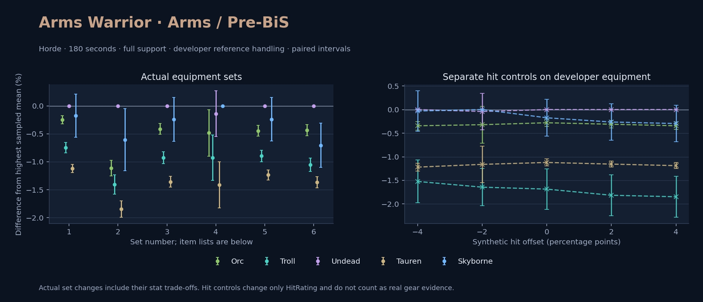

Horde · Orc / Troll / Undead / Tauren / Skyborne

No pet or guardian appears in the reference combat metrics. Reference: Orc, developer equipment, 180 seconds and full support. Pet choices remain those of the developer build.
WoWSims developer · Pre-BiS
Unmeasured proc rates: [{"source": "enchant", "id": 1900, "name": "Enchant Weapon - Crusader", "kind": "ppm", "origin": "vanilla"}]
180 seconds, full support and original developer references. Hit below is generic sheet melee / spell hit; school and talent bonuses can be attached directly to spells.
| Race | DPS | Gap and interval | Generic hit | Replay |
|---|---|---|---|---|
| Undead | 759.46 | +0.000% ± 0.000 | 7.9% / 7.9% | Native input · Website JSON |
| Skyborne | 758.14 | -0.175% ± 0.389 | 7.9% / 7.9% | Native input · Website JSON |
| Orc | 757.59 | -0.246% ± 0.073 | 7.9% / 7.9% | Native input · Website JSON |
| Troll | 753.78 | -0.748% ± 0.093 | 7.9% / 7.9% | Native input · Website JSON |
| Tauren | 750.95 | -1.120% ± 0.074 | 7.9% / 7.9% | Native input · Website JSON |
| Slot | Item | ID | Enchant |
|---|---|---|---|
| Head | Lionheart Helm | 12640 | Arcanum of Rapidity |
| Neck | Amulet of the Darkmoon | 19491 | |
| Shoulder | Adventurer's Shoulders | 10263 | |
| Back | Master's Cloak | 10249 | Enchant Cloak - Agility |
| Chest | Dawn Armor | 252483 | Enchant Chest - Greater Stats |
| Wrist | Mighty Armsplints | 10147 | Enchant Bracer - Agility |
| Hands | Gauntlets of Heroism | 226861 | Enchant Gloves - Greater Agility |
| Waist | Valiant's Waistguard | 272403 | |
| Legs | Titanic Leggings | 22385 | Arcanum of Rapidity |
| Feet | Battleboots of Heroism | 226857 | Enchant Boots - Greater Agility |
| Ring 1 | Cutthroat's Signet | 272408 | |
| Ring 2 | Band of the Better Half | 284716 | |
| Trinket 1 | Frozen Heart of the Mountain | 249469 | |
| Trinket 2 | Adaptive Combat Assistant | 272437 | |
| Main hand | Arcanite Reaper | 12784 | Enchant Weapon - Crusader |
| Ranged / relic | Archstrike Bow | 15289 |
WoWSims developer · Developer P1
180 seconds, full support and original developer references. Hit below is generic sheet melee / spell hit; school and talent bonuses can be attached directly to spells.
| Race | DPS | Gap and interval | Generic hit | Replay |
|---|---|---|---|---|
| Undead | 518.21 | +0.000% ± 0.000 | 0.0% / 0.0% | Native input · Website JSON |
| Skyborne | 515.08 | -0.605% ± 0.557 | 0.0% / 0.0% | Native input · Website JSON |
| Orc | 512.44 | -1.114% ± 0.142 | 0.0% / 0.0% | Native input · Website JSON |
| Troll | 510.92 | -1.408% ± 0.171 | 0.0% / 0.0% | Native input · Website JSON |
| Tauren | 508.64 | -1.846% ± 0.146 | 0.0% / 0.0% | Native input · Website JSON |
| Slot | Item | ID | Enchant |
|---|---|---|---|
| Head | Enchanted Thorium Helm | 12620 | |
| Neck | Lady Alizabeth's Pendant | 13002 | |
| Shoulder | Dawnbringer Shoulders | 12625 | |
| Back | Mighty Cloak | 10148 | |
| Chest | Dark Iron Plate | 11604 | |
| Wrist | Bracers of Valor | 16735 | |
| Hands | Stonegrip Gauntlets | 13072 | |
| Waist | Girdle of Uther | 13077 | |
| Legs | Enchanted Thorium Leggings | 12619 | |
| Feet | Sapphiron's Scale Boots | 13070 | |
| Ring 1 | Band of the Hierophant | 13096 | |
| Ring 2 | Ring of Protection | 15855 | |
| Trinket 1 | Shard of the Splithooves | 10659 | |
| Trinket 2 | Demon's Blood | 10779 | |
| Main hand | Arcanite Reaper | 12784 | |
| Ranged / relic | Gryphonwing Long Bow | 13022 |
Published ranked alternatives · Published pre-raid
Recorded source replacements: [{"slot": "shoulder", "from": 22241, "to": 19058, "publishedAlternativeRank": 1, "publishedEpDelta": -5.2, "reason": "First published alternative compatible with the current WoWSims database, class, faction and occupied slots."}, {"slot": "wrist", "from": 13400, "to": 13120, "publishedAlternativeRank": 1, "publishedEpDelta": -12.7, "reason": "First published alternative compatible with the current WoWSims database, class, faction and occupied slots."}, {"slot": "finger2", "from": 17713, "to": 272407, "publishedAlternativeRank": 1, "publishedEpDelta": -19.6, "reason": "First published alternative compatible with the current WoWSims database, class, faction and occupied slots."}, {"slot": "ranged", "from": 2100, "to": 13023, "publishedAlternativeRank": 1, "publishedEpDelta": -2.7, "reason": "First published alternative compatible with the current WoWSims database, class, faction and occupied slots."}]
Unmeasured proc rates: [{"source": "enchant", "id": 1900, "name": "Enchant Weapon - Crusader", "kind": "ppm", "origin": "vanilla"}]
180 seconds, full support and original developer references. Hit below is generic sheet melee / spell hit; school and talent bonuses can be attached directly to spells.
| Race | DPS | Gap and interval | Generic hit | Replay |
|---|---|---|---|---|
| Undead | 754.93 | +0.000% ± 0.000 | 8.0% / 8.0% | Native input · Website JSON |
| Skyborne | 753.13 | -0.238% ± 0.393 | 8.0% / 8.0% | Native input · Website JSON |
| Orc | 751.83 | -0.410% ± 0.097 | 8.0% / 8.0% | Native input · Website JSON |
| Troll | 747.93 | -0.927% ± 0.108 | 8.0% / 8.0% | Native input · Website JSON |
| Tauren | 744.68 | -1.357% ± 0.096 | 8.0% / 8.0% | Native input · Website JSON |
| Slot | Item | ID | Enchant |
|---|---|---|---|
| Head | Lionheart Helm | 12640 | Lesser Arcane Amalgamation |
| Neck | Skibi's Pendant | 13089 | Enchant Necklace - Strength |
| Shoulder | Golden Mantle of the Dawn | 19058 | |
| Back | Howler's Furs | 272414 | Enchant Cloak - Agility |
| Chest | Timbermaw Tunic | 252484 | Enchant Chest - Greater Stats |
| Wrist | Deepfury Bracers | 13120 | Enchant Bracer - Superior Strength |
| Hands | Timbermaw Brawlers | 19049 | Enchant Gloves - Superior Strength |
| Waist | Valiant's Waistguard | 272403 | |
| Legs | Titanic Leggings | 22385 | Lesser Arcane Amalgamation |
| Feet | Shadowcraft Boots | 16711 | Enchant Boots - Greater Agility |
| Ring 1 | Cutthroat's Signet | 272408 | |
| Ring 2 | Blessed Band of Light | 272407 | |
| Trinket 1 | Adaptive Combat Assistant | 272437 | |
| Trinket 2 | Rune of the Guard Captain | 19120 | |
| Main hand | Arcanite Reaper | 12784 | Enchant Weapon - Crusader |
| Ranged / relic | Eaglehorn Long Bow | 13023 |
Published one-slot hit alternative · Published pre-raid
One source-listed alternative; at least 80% of the source slot score retained. Reported hit selects the contrast; only native stats determine simulation outcomes. This is an experimental combination, not an endorsed best set.
Recorded source replacements: [{"slot": "shoulder", "from": 22241, "to": 19058, "publishedAlternativeRank": 1, "publishedEpDelta": -5.2, "reason": "First published alternative compatible with the current WoWSims database, class, faction and occupied slots."}, {"slot": "wrist", "from": 13400, "to": 13120, "publishedAlternativeRank": 1, "publishedEpDelta": -12.7, "reason": "First published alternative compatible with the current WoWSims database, class, faction and occupied slots."}, {"slot": "finger2", "from": 17713, "to": 272407, "publishedAlternativeRank": 1, "publishedEpDelta": -19.6, "reason": "First published alternative compatible with the current WoWSims database, class, faction and occupied slots."}, {"slot": "ranged", "from": 2100, "to": 13023, "publishedAlternativeRank": 1, "publishedEpDelta": -2.7, "reason": "First published alternative compatible with the current WoWSims database, class, faction and occupied slots."}]
Unmeasured proc rates: [{"source": "enchant", "id": 1900, "name": "Enchant Weapon - Crusader", "kind": "ppm", "origin": "vanilla"}]
180 seconds, full support and original developer references. Hit below is generic sheet melee / spell hit; school and talent bonuses can be attached directly to spells.
| Race | DPS | Gap and interval | Generic hit | Replay |
|---|---|---|---|---|
| Skyborne | 754.27 | +0.000% ± 0.000 | 7.7% / 7.7% | Native input · Website JSON |
| Undead | 753.22 | -0.139% ± 0.409 | 7.7% / 7.7% | Native input · Website JSON |
| Orc | 750.63 | -0.483% ± 0.418 | 7.7% / 7.7% | Native input · Website JSON |
| Troll | 747.27 | -0.928% ± 0.409 | 7.7% / 7.7% | Native input · Website JSON |
| Tauren | 743.63 | -1.411% ± 0.413 | 7.7% / 7.7% | Native input · Website JSON |
| Slot | Item | ID | Enchant |
|---|---|---|---|
| Head | Lionheart Helm | 12640 | Lesser Arcane Amalgamation |
| Neck | Skibi's Pendant | 13089 | Enchant Necklace - Strength |
| Shoulder | Golden Mantle of the Dawn | 19058 | |
| Back | Howler's Furs | 272414 | Enchant Cloak - Agility |
| Chest | Timbermaw Tunic | 252484 | Enchant Chest - Greater Stats |
| Wrist | Deepfury Bracers | 13120 | Enchant Bracer - Superior Strength |
| Hands | Timbermaw Brawlers | 19049 | Enchant Gloves - Superior Strength |
| Waist | Valiant's Waistguard | 272403 | |
| Legs | Titanic Leggings | 22385 | Lesser Arcane Amalgamation |
| Feet | Scalegut Treaders | 275618 | Enchant Boots - Greater Agility |
| Ring 1 | Cutthroat's Signet | 272408 | |
| Ring 2 | Blessed Band of Light | 272407 | |
| Trinket 1 | Adaptive Combat Assistant | 272437 | |
| Trinket 2 | Rune of the Guard Captain | 19120 | |
| Main hand | Arcanite Reaper | 12784 | Enchant Weapon - Crusader |
| Ranged / relic | Eaglehorn Long Bow | 13023 |
Published one-slot hit alternative · Published pre-raid
One source-listed alternative; at least 80% of the source slot score retained. Reported hit selects the contrast; only native stats determine simulation outcomes. This is an experimental combination, not an endorsed best set.
Recorded source replacements: [{"slot": "shoulder", "from": 22241, "to": 19058, "publishedAlternativeRank": 1, "publishedEpDelta": -5.2, "reason": "First published alternative compatible with the current WoWSims database, class, faction and occupied slots."}, {"slot": "wrist", "from": 13400, "to": 13120, "publishedAlternativeRank": 1, "publishedEpDelta": -12.7, "reason": "First published alternative compatible with the current WoWSims database, class, faction and occupied slots."}, {"slot": "finger2", "from": 17713, "to": 272407, "publishedAlternativeRank": 1, "publishedEpDelta": -19.6, "reason": "First published alternative compatible with the current WoWSims database, class, faction and occupied slots."}, {"slot": "ranged", "from": 2100, "to": 13023, "publishedAlternativeRank": 1, "publishedEpDelta": -2.7, "reason": "First published alternative compatible with the current WoWSims database, class, faction and occupied slots."}]
Unmeasured proc rates: [{"source": "enchant", "id": 1900, "name": "Enchant Weapon - Crusader", "kind": "ppm", "origin": "vanilla"}]
180 seconds, full support and original developer references. Hit below is generic sheet melee / spell hit; school and talent bonuses can be attached directly to spells.
| Race | DPS | Gap and interval | Generic hit | Replay |
|---|---|---|---|---|
| Undead | 752.83 | +0.000% ± 0.000 | 8.2% / 8.2% | Native input · Website JSON |
| Skyborne | 751.03 | -0.239% ± 0.390 | 8.2% / 8.2% | Native input · Website JSON |
| Orc | 749.47 | -0.447% ± 0.097 | 8.2% / 8.2% | Native input · Website JSON |
| Troll | 746.09 | -0.896% ± 0.103 | 8.2% / 8.2% | Native input · Website JSON |
| Tauren | 743.52 | -1.236% ± 0.088 | 8.2% / 8.2% | Native input · Website JSON |
| Slot | Item | ID | Enchant |
|---|---|---|---|
| Head | Lionheart Helm | 12640 | Lesser Arcane Amalgamation |
| Neck | Skibi's Pendant | 13089 | Enchant Necklace - Strength |
| Shoulder | Shadowcraft Spaulders | 16708 | |
| Back | Howler's Furs | 272414 | Enchant Cloak - Agility |
| Chest | Timbermaw Tunic | 252484 | Enchant Chest - Greater Stats |
| Wrist | Deepfury Bracers | 13120 | Enchant Bracer - Superior Strength |
| Hands | Timbermaw Brawlers | 19049 | Enchant Gloves - Superior Strength |
| Waist | Valiant's Waistguard | 272403 | |
| Legs | Titanic Leggings | 22385 | Lesser Arcane Amalgamation |
| Feet | Shadowcraft Boots | 16711 | Enchant Boots - Greater Agility |
| Ring 1 | Cutthroat's Signet | 272408 | |
| Ring 2 | Blessed Band of Light | 272407 | |
| Trinket 1 | Adaptive Combat Assistant | 272437 | |
| Trinket 2 | Rune of the Guard Captain | 19120 | |
| Main hand | Arcanite Reaper | 12784 | Enchant Weapon - Crusader |
| Ranged / relic | Eaglehorn Long Bow | 13023 |
Published one-slot hit alternative · Published pre-raid
One source-listed alternative; at least 80% of the source slot score retained. Reported hit selects the contrast; only native stats determine simulation outcomes. This is an experimental combination, not an endorsed best set.
Recorded source replacements: [{"slot": "shoulder", "from": 22241, "to": 19058, "publishedAlternativeRank": 1, "publishedEpDelta": -5.2, "reason": "First published alternative compatible with the current WoWSims database, class, faction and occupied slots."}, {"slot": "wrist", "from": 13400, "to": 13120, "publishedAlternativeRank": 1, "publishedEpDelta": -12.7, "reason": "First published alternative compatible with the current WoWSims database, class, faction and occupied slots."}, {"slot": "waist", "from": 227805, "to": 272403, "publishedAlternativeRank": 1, "publishedEpDelta": -13.5, "reason": "First published alternative compatible with the current WoWSims database, class, faction and occupied slots."}, {"slot": "finger2", "from": 17713, "to": 272407, "publishedAlternativeRank": 1, "publishedEpDelta": -19.6, "reason": "First published alternative compatible with the current WoWSims database, class, faction and occupied slots."}, {"slot": "ranged", "from": 2100, "to": 13023, "publishedAlternativeRank": 1, "publishedEpDelta": -2.7, "reason": "First published alternative compatible with the current WoWSims database, class, faction and occupied slots."}]
Unmeasured proc rates: [{"source": "enchant", "id": 1900, "name": "Enchant Weapon - Crusader", "kind": "ppm", "origin": "vanilla"}]
180 seconds, full support and original developer references. Hit below is generic sheet melee / spell hit; school and talent bonuses can be attached directly to spells.
| Race | DPS | Gap and interval | Generic hit | Replay |
|---|---|---|---|---|
| Undead | 735.23 | +0.000% ± 0.000 | 9.0% / 9.0% | Native input · Website JSON |
| Orc | 732.03 | -0.436% ± 0.099 | 9.0% / 9.0% | Native input · Website JSON |
| Skyborne | 730.06 | -0.704% ± 0.398 | 9.0% / 9.0% | Native input · Website JSON |
| Troll | 727.48 | -1.054% ± 0.119 | 9.0% / 9.0% | Native input · Website JSON |
| Tauren | 725.19 | -1.366% ± 0.099 | 9.0% / 9.0% | Native input · Website JSON |
| Slot | Item | ID | Enchant |
|---|---|---|---|
| Head | Lionheart Helm | 12640 | Lesser Arcane Amalgamation |
| Neck | Skibi's Pendant | 13089 | Enchant Necklace - Strength |
| Shoulder | Golden Mantle of the Dawn | 19058 | |
| Back | Howler's Furs | 272414 | Enchant Cloak - Agility |
| Chest | Timbermaw Tunic | 252484 | Enchant Chest - Greater Stats |
| Wrist | Deepfury Bracers | 13120 | Enchant Bracer - Superior Strength |
| Hands | Timbermaw Brawlers | 19049 | Enchant Gloves - Superior Strength |
| Waist | Valiant's Waistguard | 272403 | |
| Legs | Titanic Leggings | 22385 | Lesser Arcane Amalgamation |
| Feet | Shadowcraft Boots | 16711 | Enchant Boots - Greater Agility |
| Ring 1 | Cutthroat's Signet | 272408 | |
| Ring 2 | Blessed Band of Light | 272407 | |
| Trinket 1 | Adaptive Combat Assistant | 272437 | |
| Trinket 2 | Rune of the Guard Captain | 19120 | |
| Main hand | Legionite Glaive | 250619 | Enchant Weapon - Crusader |
| Ranged / relic | Eaglehorn Long Bow | 13023 |
The same declared pool is available to every race. Each race keeps its best validation-sample set with its screening-selected racial policy. Separate samples confirm that choice, with fresh precision samples near the practical-loss boundary. Gaps use the highest sampled mean under that same duration, support and reference treatment as their reference. A zero reference gap does not certify a race; the main matrix also allows uncertainty in the leader.
| Pool | Seconds | Support | References | Race | DPS | Gap and interval | Racial policies / mana | Selected set | Generic hit: melee / spell | Replay |
|---|---|---|---|---|---|---|---|---|---|---|
| published-pre-raid | 60 | full | developer | Troll | 785.70 | +0.000% ± 0.00020,000 iterations | developer / developer / developerMana waits 0.0s | published-warrior-arms-horde-97f677448772363f-lower-hit | 7.7% / 7.7% | Input · Result · Stats |
| published-pre-raid | 60 | full | developer | Skyborne | 784.89 | -0.103% ± 0.10320,000 iterations | developer / developer / developerMana waits 0.0s | published-warrior-arms-horde-97f677448772363f-lower-hit | 7.7% / 7.7% | Input · Result · Stats |
| published-pre-raid | 60 | full | developer | Orc | 770.28 | -1.962% ± 0.05820,000 iterations | delay15 / developer / developerMana waits 0.0s | published-warrior-arms-horde-97f677448772363f-lower-hit | 7.7% / 7.7% | Input · Result · Stats |
| published-pre-raid | 60 | full | developer | Undead | 769.82 | -2.021% ± 0.07720,000 iterations | developer / developer / developerMana waits 0.0s | published-warrior-arms-horde-97f677448772363f | 8.0% / 8.0% | Input · Result · Stats |
| published-pre-raid | 60 | full | developer | Tauren | 759.27 | -3.363% ± 0.05920,000 iterations | developer / developer / developerMana waits 0.0s | published-warrior-arms-horde-97f677448772363f-lower-hit | 7.7% / 7.7% | Input · Result · Stats |
| published-pre-raid | 60 | full | explicit | Troll | 785.70 | +0.000% ± 0.00020,000 iterations | developer / developer / developerMana waits 0.0s | published-warrior-arms-horde-97f677448772363f-lower-hit | 7.7% / 7.7% | Input · Result · Stats |
| published-pre-raid | 60 | full | explicit | Skyborne | 784.89 | -0.103% ± 0.10320,000 iterations | developer / developer / developerMana waits 0.0s | published-warrior-arms-horde-97f677448772363f-lower-hit | 7.7% / 7.7% | Input · Result · Stats |
| published-pre-raid | 60 | full | explicit | Orc | 770.28 | -1.962% ± 0.05820,000 iterations | delay15 / developer / developerMana waits 0.0s | published-warrior-arms-horde-97f677448772363f-lower-hit | 7.7% / 7.7% | Input · Result · Stats |
| published-pre-raid | 60 | full | explicit | Undead | 769.82 | -2.021% ± 0.07720,000 iterations | developer / developer / developerMana waits 0.0s | published-warrior-arms-horde-97f677448772363f | 8.0% / 8.0% | Input · Result · Stats |
| published-pre-raid | 60 | full | explicit | Tauren | 759.27 | -3.363% ± 0.05920,000 iterations | developer / developer / developerMana waits 0.0s | published-warrior-arms-horde-97f677448772363f-lower-hit | 7.7% / 7.7% | Input · Result · Stats |
| published-pre-raid | 60 | self | developer | Skyborne | 370.45 | +0.000% ± 0.00020,000 iterations | developer / developer / developerMana waits 0.0s | published-warrior-arms-horde-97f677448772363f-lower-hit | 7.7% / 7.7% | Input · Result · Stats |
| published-pre-raid | 60 | self | developer | Troll | 369.62 | -0.224% ± 0.18220,000 iterations | delay15 / developer / developerMana waits 0.0s | published-warrior-arms-horde-97f677448772363f | 8.0% / 8.0% | Input · Result · Stats |
| published-pre-raid | 60 | self | developer | Undead | 357.94 | -3.377% ± 0.16220,000 iterations | developer / developer / developerMana waits 0.0s | published-warrior-arms-horde-97f677448772363f-lower-hit | 7.7% / 7.7% | Input · Result · Stats |
| published-pre-raid | 60 | self | developer | Orc | 356.78 | -3.689% ± 0.16020,000 iterations | delay15 / developer / developerMana waits 0.0s | published-warrior-arms-horde-97f677448772363f-lower-hit | 7.7% / 7.7% | Input · Result · Stats |
| published-pre-raid | 60 | self | developer | Tauren | 351.37 | -5.151% ± 0.15920,000 iterations | developer / developer / developerMana waits 0.0s | published-warrior-arms-horde-97f677448772363f-lower-hit | 7.7% / 7.7% | Input · Result · Stats |
| published-pre-raid | 60 | self | explicit | Troll | 336.30 | +0.000% ± 0.00020,000 iterations | delay15 / developer / developerMana waits 0.0s | published-warrior-arms-horde-97f677448772363f-lower-hit | 7.7% / 7.7% | Input · Result · Stats |
| published-pre-raid | 60 | self | explicit | Skyborne | 334.96 | -0.397% ± 0.18320,000 iterations | developer / developer / developerMana waits 0.0s | published-warrior-arms-horde-97f677448772363f-lower-hit | 7.7% / 7.7% | Input · Result · Stats |
| published-pre-raid | 60 | self | explicit | Undead | 324.40 | -3.538% ± 0.22820,000 iterations | developer / developer / developerMana waits 0.0s | published-warrior-arms-horde-e386be8b84d550fa-higher-hit | 9.0% / 9.0% | Input · Result · Stats |
| published-pre-raid | 60 | self | explicit | Orc | 322.63 | -4.064% ± 0.22820,000 iterations | delay15 / developer / developerMana waits 0.0s | published-warrior-arms-horde-e386be8b84d550fa-higher-hit | 9.0% / 9.0% | Input · Result · Stats |
| published-pre-raid | 60 | self | explicit | Tauren | 317.80 | -5.500% ± 0.22520,000 iterations | developer / developer / developerMana waits 0.0s | published-warrior-arms-horde-e386be8b84d550fa-higher-hit | 9.0% / 9.0% | Input · Result · Stats |
| published-pre-raid | 180 | full | developer | Undead | 755.85 | +0.000% ± 0.00020,000 iterations | developer / developer / developerMana waits 0.0s | published-warrior-arms-horde-97f677448772363f | 8.0% / 8.0% | Input · Result · Stats · Website JSON |
| published-pre-raid | 180 | full | developer | Skyborne | 755.15 | -0.092% ± 0.09220,000 iterations | developer / developer / developerMana waits 0.0s | published-warrior-arms-horde-97f677448772363f-lower-hit | 7.7% / 7.7% | Input · Result · Stats · Website JSON |
| published-pre-raid | 180 | full | developer | Orc | 752.73 | -0.412% ± 0.02120,000 iterations | delay15 / developer / developerMana waits 0.0s | published-warrior-arms-horde-97f677448772363f | 8.0% / 8.0% | Input · Result · Stats · Website JSON |
| published-pre-raid | 180 | full | developer | Troll | 749.05 | -0.899% ± 0.02420,000 iterations | developer / developer / developerMana waits 0.0s | published-warrior-arms-horde-97f677448772363f | 8.0% / 8.0% | Input · Result · Stats · Website JSON |
| published-pre-raid | 180 | full | developer | Tauren | 745.68 | -1.345% ± 0.02120,000 iterations | developer / developer / developerMana waits 0.0s | published-warrior-arms-horde-97f677448772363f | 8.0% / 8.0% | Input · Result · Stats · Website JSON |
| published-pre-raid | 180 | full | explicit | Undead | 755.85 | +0.000% ± 0.00020,000 iterations | developer / developer / developerMana waits 0.0s | published-warrior-arms-horde-97f677448772363f | 8.0% / 8.0% | Input · Result · Stats |
| published-pre-raid | 180 | full | explicit | Skyborne | 755.15 | -0.092% ± 0.09220,000 iterations | developer / developer / developerMana waits 0.0s | published-warrior-arms-horde-97f677448772363f-lower-hit | 7.7% / 7.7% | Input · Result · Stats |
| published-pre-raid | 180 | full | explicit | Orc | 752.73 | -0.412% ± 0.02120,000 iterations | delay15 / developer / developerMana waits 0.0s | published-warrior-arms-horde-97f677448772363f | 8.0% / 8.0% | Input · Result · Stats |
| published-pre-raid | 180 | full | explicit | Troll | 749.05 | -0.899% ± 0.02420,000 iterations | developer / developer / developerMana waits 0.0s | published-warrior-arms-horde-97f677448772363f | 8.0% / 8.0% | Input · Result · Stats |
| published-pre-raid | 180 | full | explicit | Tauren | 745.68 | -1.345% ± 0.02120,000 iterations | developer / developer / developerMana waits 0.0s | published-warrior-arms-horde-97f677448772363f | 8.0% / 8.0% | Input · Result · Stats |
| published-pre-raid | 180 | self | developer | Undead | 335.71 | +0.000% ± 0.00020,000 iterations | developer / developer / developerMana waits 0.0s | published-warrior-arms-horde-e386be8b84d550fa-higher-hit | 9.0% / 9.0% | Input · Result · Stats |
| published-pre-raid | 180 | self | developer | Skyborne | 335.68 | -0.007% ± 0.13820,000 iterations | developer / developer / developerMana waits 0.0s | published-warrior-arms-horde-97f677448772363f-lower-hit | 7.7% / 7.7% | Input · Result · Stats |
| published-pre-raid | 180 | self | developer | Orc | 331.69 | -1.195% ± 0.13720,000 iterations | delay15 / developer / developerMana waits 0.0s | published-warrior-arms-horde-97f677448772363f | 8.0% / 8.0% | Input · Result · Stats |
| published-pre-raid | 180 | self | developer | Troll | 330.36 | -1.592% ± 0.13920,000 iterations | developer / developer / developerMana waits 0.0s | published-warrior-arms-horde-97f677448772363f-lower-hit | 7.7% / 7.7% | Input · Result · Stats |
| published-pre-raid | 180 | self | developer | Tauren | 328.49 | -2.148% ± 0.13620,000 iterations | developer / developer / developerMana waits 0.0s | published-warrior-arms-horde-97f677448772363f | 8.0% / 8.0% | Input · Result · Stats |
| published-pre-raid | 180 | self | explicit | Undead | 315.71 | +0.000% ± 0.00020,000 iterations | developer / developer / developerMana waits 0.0s | published-warrior-arms-horde-e386be8b84d550fa-higher-hit | 9.0% / 9.0% | Input · Result · Stats |
| published-pre-raid | 180 | self | explicit | Skyborne | 315.00 | -0.226% ± 0.14420,000 iterations | developer / developer / developerMana waits 0.0s | published-warrior-arms-horde-97f677448772363f-lower-hit | 7.7% / 7.7% | Input · Result · Stats |
| published-pre-raid | 180 | self | explicit | Orc | 312.19 | -1.116% ± 0.05420,000 iterations | delay15 / developer / developerMana waits 0.0s | published-warrior-arms-horde-e386be8b84d550fa-higher-hit | 9.0% / 9.0% | Input · Result · Stats |
| published-pre-raid | 180 | self | explicit | Troll | 310.23 | -1.735% ± 0.11820,000 iterations | delay15 / developer / developerMana waits 0.0s | published-warrior-arms-horde-e386be8b84d550fa-higher-hit | 9.0% / 9.0% | Input · Result · Stats |
| published-pre-raid | 180 | self | explicit | Tauren | 309.39 | -2.002% ± 0.05720,000 iterations | developer / developer / developerMana waits 0.0s | published-warrior-arms-horde-e386be8b84d550fa-higher-hit | 9.0% / 9.0% | Input · Result · Stats |
| published-pre-raid | 300 | full | developer | Skyborne | 743.07 | +0.000% ± 0.00020,000 iterations | developer / developer / developerMana waits 0.0s | published-warrior-arms-horde-97f677448772363f-lower-hit | 7.7% / 7.7% | Input · Result · Stats |
| published-pre-raid | 300 | full | developer | Undead | 741.80 | -0.170% ± 0.07220,000 iterations | developer / developer / developerMana waits 0.0s | published-warrior-arms-horde-97f677448772363f-lower-hit | 7.7% / 7.7% | Input · Result · Stats |
| published-pre-raid | 300 | full | developer | Orc | 737.95 | -0.689% ± 0.07220,000 iterations | delay15 / developer / developerMana waits 0.0s | published-warrior-arms-horde-97f677448772363f | 8.0% / 8.0% | Input · Result · Stats |
| published-pre-raid | 300 | full | developer | Troll | 737.16 | -0.795% ± 0.07020,000 iterations | delay15 / developer / developerMana waits 0.0s | published-warrior-arms-horde-97f677448772363f | 8.0% / 8.0% | Input · Result · Stats |
| published-pre-raid | 300 | full | developer | Tauren | 732.36 | -1.441% ± 0.07120,000 iterations | developer / developer / developerMana waits 0.0s | published-warrior-arms-horde-97f677448772363f-lower-hit | 7.7% / 7.7% | Input · Result · Stats |
| published-pre-raid | 300 | full | explicit | Skyborne | 743.07 | +0.000% ± 0.00020,000 iterations | developer / developer / developerMana waits 0.0s | published-warrior-arms-horde-97f677448772363f-lower-hit | 7.7% / 7.7% | Input · Result · Stats |
| published-pre-raid | 300 | full | explicit | Undead | 741.80 | -0.170% ± 0.07220,000 iterations | developer / developer / developerMana waits 0.0s | published-warrior-arms-horde-97f677448772363f-lower-hit | 7.7% / 7.7% | Input · Result · Stats |
| published-pre-raid | 300 | full | explicit | Orc | 737.95 | -0.689% ± 0.07220,000 iterations | delay15 / developer / developerMana waits 0.0s | published-warrior-arms-horde-97f677448772363f | 8.0% / 8.0% | Input · Result · Stats |
| published-pre-raid | 300 | full | explicit | Troll | 737.16 | -0.795% ± 0.07020,000 iterations | delay15 / developer / developerMana waits 0.0s | published-warrior-arms-horde-97f677448772363f | 8.0% / 8.0% | Input · Result · Stats |
| published-pre-raid | 300 | full | explicit | Tauren | 732.36 | -1.441% ± 0.07120,000 iterations | developer / developer / developerMana waits 0.0s | published-warrior-arms-horde-97f677448772363f-lower-hit | 7.7% / 7.7% | Input · Result · Stats |
| published-pre-raid | 300 | self | developer | Skyborne | 328.75 | +0.000% ± 0.00020,000 iterations | developer / developer / developerMana waits 0.0s | published-warrior-arms-horde-97f677448772363f-lower-hit | 7.7% / 7.7% | Input · Result · Stats |
| published-pre-raid | 300 | self | developer | Undead | 327.18 | -0.478% ± 0.10520,000 iterations | developer / developer / developerMana waits 0.0s | published-warrior-arms-horde-97f677448772363f-lower-hit | 7.7% / 7.7% | Input · Result · Stats |
| published-pre-raid | 300 | self | developer | Troll | 324.83 | -1.194% ± 0.11220,000 iterations | oncd / developer / developerMana waits 0.0s | published-warrior-arms-horde-e386be8b84d550fa-higher-hit | 9.0% / 9.0% | Input · Result · Stats |
| published-pre-raid | 300 | self | developer | Orc | 323.77 | -1.514% ± 0.10520,000 iterations | delay15 / developer / developerMana waits 0.0s | published-warrior-arms-horde-97f677448772363f-lower-hit | 7.7% / 7.7% | Input · Result · Stats |
| published-pre-raid | 300 | self | developer | Tauren | 321.09 | -2.331% ± 0.10420,000 iterations | developer / developer / developerMana waits 0.0s | published-warrior-arms-horde-97f677448772363f-lower-hit | 7.7% / 7.7% | Input · Result · Stats |
| published-pre-raid | 300 | self | explicit | Skyborne | 311.21 | +0.000% ± 0.00020,000 iterations | developer / developer / developerMana waits 0.0s | published-warrior-arms-horde-97f677448772363f-lower-hit | 7.7% / 7.7% | Input · Result · Stats |
| published-pre-raid | 300 | self | explicit | Undead | 309.66 | -0.499% ± 0.11120,000 iterations | developer / developer / developerMana waits 0.0s | published-warrior-arms-horde-e386be8b84d550fa-higher-hit | 9.0% / 9.0% | Input · Result · Stats |
| published-pre-raid | 300 | self | explicit | Troll | 306.69 | -1.453% ± 0.11220,000 iterations | delay15 / developer / developerMana waits 0.0s | published-warrior-arms-horde-e386be8b84d550fa-higher-hit | 9.0% / 9.0% | Input · Result · Stats |
| published-pre-raid | 300 | self | explicit | Orc | 305.73 | -1.762% ± 0.11120,000 iterations | delay15 / developer / developerMana waits 0.0s | published-warrior-arms-horde-e386be8b84d550fa-higher-hit | 9.0% / 9.0% | Input · Result · Stats |
| published-pre-raid | 300 | self | explicit | Tauren | 303.48 | -2.486% ± 0.11020,000 iterations | developer / developer / developerMana waits 0.0s | published-warrior-arms-horde-e386be8b84d550fa-higher-hit | 9.0% / 9.0% | Input · Result · Stats |
| developer-reference | 60 | full | developer | Orc | 793.46 | +0.000% ± 0.00020,000 iterations | delay15 / developer / developerMana waits 0.0s | developer | 7.9% / 7.9% | Input · Result · Stats |
| developer-reference | 60 | full | developer | Undead | 792.20 | -0.158% ± 0.01720,000 iterations | developer / developer / developerMana waits 0.0s | developer | 7.9% / 7.9% | Input · Result · Stats |
| developer-reference | 60 | full | developer | Troll | 789.38 | -0.513% ± 0.04220,000 iterations | developer / developer / developerMana waits 0.0s | developer | 7.9% / 7.9% | Input · Result · Stats |
| developer-reference | 60 | full | developer | Skyborne | 783.59 | -1.243% ± 0.10520,000 iterations | developer / developer / developerMana waits 0.0s | developer | 7.9% / 7.9% | Input · Result · Stats |
| developer-reference | 60 | full | developer | Tauren | 783.01 | -1.316% ± 0.01120,000 iterations | developer / developer / developerMana waits 0.0s | developer | 7.9% / 7.9% | Input · Result · Stats |
| developer-reference | 60 | full | explicit | Orc | 793.46 | +0.000% ± 0.00020,000 iterations | delay15 / developer / developerMana waits 0.0s | developer | 7.9% / 7.9% | Input · Result · Stats |
| developer-reference | 60 | full | explicit | Undead | 792.20 | -0.158% ± 0.01720,000 iterations | developer / developer / developerMana waits 0.0s | developer | 7.9% / 7.9% | Input · Result · Stats |
| developer-reference | 60 | full | explicit | Troll | 789.38 | -0.513% ± 0.04220,000 iterations | developer / developer / developerMana waits 0.0s | developer | 7.9% / 7.9% | Input · Result · Stats |
| developer-reference | 60 | full | explicit | Skyborne | 783.59 | -1.243% ± 0.10520,000 iterations | developer / developer / developerMana waits 0.0s | developer | 7.9% / 7.9% | Input · Result · Stats |
| developer-reference | 60 | full | explicit | Tauren | 783.01 | -1.316% ± 0.01120,000 iterations | developer / developer / developerMana waits 0.0s | developer | 7.9% / 7.9% | Input · Result · Stats |
| developer-reference | 60 | self | developer | Undead | 375.68 | +0.000% ± 0.00020,000 iterations | developer / developer / developerMana waits 0.0s | developer | 7.9% / 7.9% | Input · Result · Stats |
| developer-reference | 60 | self | developer | Orc | 374.23 | -0.386% ± 0.04120,000 iterations | delay15 / developer / developerMana waits 0.0s | developer | 7.9% / 7.9% | Input · Result · Stats |
| developer-reference | 60 | self | developer | Troll | 370.64 | -1.342% ± 0.05620,000 iterations | developer / developer / developerMana waits 0.0s | developer | 7.9% / 7.9% | Input · Result · Stats |
| developer-reference | 60 | self | developer | Tauren | 369.40 | -1.673% ± 0.04320,000 iterations | developer / developer / developerMana waits 0.0s | developer | 7.9% / 7.9% | Input · Result · Stats |
| developer-reference | 60 | self | developer | Skyborne | 368.67 | -1.867% ± 0.14820,000 iterations | developer / developer / developerMana waits 0.0s | developer | 7.9% / 7.9% | Input · Result · Stats |
| developer-reference | 60 | self | explicit | Undead | 340.11 | +0.000% ± 0.00020,000 iterations | developer / developer / developerMana waits 0.0s | developer | 7.9% / 7.9% | Input · Result · Stats |
| developer-reference | 60 | self | explicit | Orc | 338.28 | -0.540% ± 0.06520,000 iterations | delay15 / developer / developerMana waits 0.0s | developer | 7.9% / 7.9% | Input · Result · Stats |
| developer-reference | 60 | self | explicit | Troll | 335.27 | -1.425% ± 0.07720,000 iterations | developer / developer / developerMana waits 0.0s | developer | 7.9% / 7.9% | Input · Result · Stats |
| developer-reference | 60 | self | explicit | Skyborne | 335.21 | -1.443% ± 0.14020,000 iterations | developer / developer / developerMana waits 0.0s | developer | 7.9% / 7.9% | Input · Result · Stats |
| developer-reference | 60 | self | explicit | Tauren | 333.85 | -1.840% ± 0.06820,000 iterations | developer / developer / developerMana waits 0.0s | developer | 7.9% / 7.9% | Input · Result · Stats |
| developer-reference | 180 | full | developer | Undead | 761.39 | +0.000% ± 0.00020,000 iterations | developer / developer / developerMana waits 0.0s | developer | 7.9% / 7.9% | Input · Result · Stats · Website JSON |
| developer-reference | 180 | full | developer | Skyborne | 760.16 | -0.162% ± 0.08620,000 iterations | developer / developer / developerMana waits 0.0s | developer | 7.9% / 7.9% | Input · Result · Stats · Website JSON |
| developer-reference | 180 | full | developer | Orc | 759.39 | -0.264% ± 0.01720,000 iterations | delay15 / developer / developerMana waits 0.0s | developer | 7.9% / 7.9% | Input · Result · Stats · Website JSON |
| developer-reference | 180 | full | developer | Troll | 755.72 | -0.745% ± 0.02120,000 iterations | developer / developer / developerMana waits 0.0s | developer | 7.9% / 7.9% | Input · Result · Stats · Website JSON |
| developer-reference | 180 | full | developer | Tauren | 752.78 | -1.132% ± 0.01720,000 iterations | developer / developer / developerMana waits 0.0s | developer | 7.9% / 7.9% | Input · Result · Stats · Website JSON |
| developer-reference | 180 | full | explicit | Undead | 761.39 | +0.000% ± 0.00020,000 iterations | developer / developer / developerMana waits 0.0s | developer | 7.9% / 7.9% | Input · Result · Stats |
| developer-reference | 180 | full | explicit | Skyborne | 760.16 | -0.162% ± 0.08620,000 iterations | developer / developer / developerMana waits 0.0s | developer | 7.9% / 7.9% | Input · Result · Stats |
| developer-reference | 180 | full | explicit | Orc | 759.39 | -0.264% ± 0.01720,000 iterations | delay15 / developer / developerMana waits 0.0s | developer | 7.9% / 7.9% | Input · Result · Stats |
| developer-reference | 180 | full | explicit | Troll | 755.72 | -0.745% ± 0.02120,000 iterations | developer / developer / developerMana waits 0.0s | developer | 7.9% / 7.9% | Input · Result · Stats |
| developer-reference | 180 | full | explicit | Tauren | 752.78 | -1.132% ± 0.01720,000 iterations | developer / developer / developerMana waits 0.0s | developer | 7.9% / 7.9% | Input · Result · Stats |
| developer-reference | 180 | self | developer | Undead | 339.18 | +0.000% ± 0.00020,000 iterations | developer / developer / developerMana waits 0.0s | developer | 7.9% / 7.9% | Input · Result · Stats |
| developer-reference | 180 | self | developer | Skyborne | 339.04 | -0.040% ± 0.12020,000 iterations | developer / developer / developerMana waits 0.0s | developer | 7.9% / 7.9% | Input · Result · Stats |
| developer-reference | 180 | self | developer | Orc | 336.39 | -0.823% ± 0.04620,000 iterations | delay15 / developer / developerMana waits 0.0s | developer | 7.9% / 7.9% | Input · Result · Stats |
| developer-reference | 180 | self | developer | Troll | 335.29 | -1.144% ± 0.05220,000 iterations | developer / developer / developerMana waits 0.0s | developer | 7.9% / 7.9% | Input · Result · Stats |
| developer-reference | 180 | self | developer | Tauren | 333.38 | -1.708% ± 0.04820,000 iterations | developer / developer / developerMana waits 0.0s | developer | 7.9% / 7.9% | Input · Result · Stats |
| developer-reference | 180 | self | explicit | Skyborne | 318.83 | +0.000% ± 0.00020,000 iterations | developer / developer / developerMana waits 0.0s | developer | 7.9% / 7.9% | Input · Result · Stats |
| developer-reference | 180 | self | explicit | Undead | 318.37 | -0.143% ± 0.12020,000 iterations | developer / developer / developerMana waits 0.0s | developer | 7.9% / 7.9% | Input · Result · Stats |
| developer-reference | 180 | self | explicit | Orc | 315.23 | -1.127% ± 0.11720,000 iterations | delay15 / developer / developerMana waits 0.0s | developer | 7.9% / 7.9% | Input · Result · Stats |
| developer-reference | 180 | self | explicit | Troll | 314.28 | -1.428% ± 0.11620,000 iterations | developer / developer / developerMana waits 0.0s | developer | 7.9% / 7.9% | Input · Result · Stats |
| developer-reference | 180 | self | explicit | Tauren | 312.57 | -1.964% ± 0.11720,000 iterations | developer / developer / developerMana waits 0.0s | developer | 7.9% / 7.9% | Input · Result · Stats |
| developer-reference | 300 | full | developer | Skyborne | 748.97 | +0.000% ± 0.00020,000 iterations | developer / developer / developerMana waits 0.0s | developer | 7.9% / 7.9% | Input · Result · Stats |
| developer-reference | 300 | full | developer | Undead | 748.91 | -0.008% ± 0.06720,000 iterations | developer / developer / developerMana waits 0.0s | developer | 7.9% / 7.9% | Input · Result · Stats |
| developer-reference | 300 | full | developer | Orc | 745.59 | -0.452% ± 0.06720,000 iterations | delay15 / developer / developerMana waits 0.0s | developer | 7.9% / 7.9% | Input · Result · Stats |
| developer-reference | 300 | full | developer | Troll | 743.72 | -0.702% ± 0.06720,000 iterations | oncd / developer / developerMana waits 0.0s | developer | 7.9% / 7.9% | Input · Result · Stats |
| developer-reference | 300 | full | developer | Tauren | 740.34 | -1.153% ± 0.06720,000 iterations | developer / developer / developerMana waits 0.0s | developer | 7.9% / 7.9% | Input · Result · Stats |
| developer-reference | 300 | full | explicit | Skyborne | 748.97 | +0.000% ± 0.00020,000 iterations | developer / developer / developerMana waits 0.0s | developer | 7.9% / 7.9% | Input · Result · Stats |
| developer-reference | 300 | full | explicit | Undead | 748.91 | -0.008% ± 0.06720,000 iterations | developer / developer / developerMana waits 0.0s | developer | 7.9% / 7.9% | Input · Result · Stats |
| developer-reference | 300 | full | explicit | Orc | 745.59 | -0.452% ± 0.06720,000 iterations | delay15 / developer / developerMana waits 0.0s | developer | 7.9% / 7.9% | Input · Result · Stats |
| developer-reference | 300 | full | explicit | Troll | 743.72 | -0.702% ± 0.06720,000 iterations | oncd / developer / developerMana waits 0.0s | developer | 7.9% / 7.9% | Input · Result · Stats |
| developer-reference | 300 | full | explicit | Tauren | 740.34 | -1.153% ± 0.06720,000 iterations | developer / developer / developerMana waits 0.0s | developer | 7.9% / 7.9% | Input · Result · Stats |
| developer-reference | 300 | self | developer | Skyborne | 333.22 | +0.000% ± 0.00020,000 iterations | developer / developer / developerMana waits 0.0s | developer | 7.9% / 7.9% | Input · Result · Stats |
| developer-reference | 300 | self | developer | Undead | 332.26 | -0.288% ± 0.10120,000 iterations | developer / developer / developerMana waits 0.0s | developer | 7.9% / 7.9% | Input · Result · Stats |
| developer-reference | 300 | self | developer | Troll | 331.05 | -0.650% ± 0.09720,000 iterations | oncd / developer / developerMana waits 0.0s | developer | 7.9% / 7.9% | Input · Result · Stats |
| developer-reference | 300 | self | developer | Orc | 329.02 | -1.260% ± 0.10020,000 iterations | delay15 / developer / developerMana waits 0.0s | developer | 7.9% / 7.9% | Input · Result · Stats |
| developer-reference | 300 | self | developer | Tauren | 326.59 | -1.990% ± 0.10020,000 iterations | developer / developer / developerMana waits 0.0s | developer | 7.9% / 7.9% | Input · Result · Stats |
| developer-reference | 300 | self | explicit | Skyborne | 314.38 | +0.000% ± 0.00020,000 iterations | developer / developer / developerMana waits 0.0s | developer | 7.9% / 7.9% | Input · Result · Stats |
| developer-reference | 300 | self | explicit | Undead | 313.84 | -0.171% ± 0.09920,000 iterations | developer / developer / developerMana waits 0.0s | developer | 7.9% / 7.9% | Input · Result · Stats |
| developer-reference | 300 | self | explicit | Troll | 312.10 | -0.726% ± 0.09720,000 iterations | delay15 / developer / developerMana waits 0.0s | developer | 7.9% / 7.9% | Input · Result · Stats |
| developer-reference | 300 | self | explicit | Orc | 310.35 | -1.281% ± 0.09820,000 iterations | delay15 / developer / developerMana waits 0.0s | developer | 7.9% / 7.9% | Input · Result · Stats |
| developer-reference | 300 | self | explicit | Tauren | 308.22 | -1.961% ± 0.09820,000 iterations | developer / developer / developerMana waits 0.0s | developer | 7.9% / 7.9% | Input · Result · Stats |
180 seconds, full support and the developer equipment anchor. These checks test creature sensitivity without a full gear search.
| Target | References | Race | DPS | Gap and interval | Replay |
|---|---|---|---|---|---|
| beast | developer | Troll | 783.18 | +0.000% ± 0.000 | Input · Result |
| beast | developer | Undead | 759.46 | -3.028% ± 0.424 | Input · Result |
| beast | developer | Skyborne | 758.14 | -3.197% ± 0.366 | Input · Result |
| beast | developer | Orc | 757.34 | -3.299% ± 0.422 | Input · Result |
| beast | developer | Tauren | 750.95 | -4.114% ± 0.424 | Input · Result |
| beast | explicit | Troll | 783.18 | +0.000% ± 0.000 | Input · Result |
| beast | explicit | Undead | 759.46 | -3.028% ± 0.424 | Input · Result |
| beast | explicit | Skyborne | 758.14 | -3.197% ± 0.366 | Input · Result |
| beast | explicit | Orc | 757.34 | -3.299% ± 0.422 | Input · Result |
| beast | explicit | Tauren | 750.95 | -4.114% ± 0.424 | Input · Result |
| elemental | developer | Skyborne | 795.21 | +0.000% ± 0.000 | Input · Result |
| elemental | developer | Undead | 759.46 | -4.496% ± 0.372 | Input · Result |
| elemental | developer | Orc | 757.34 | -4.763% ± 0.376 | Input · Result |
| elemental | developer | Tauren | 750.95 | -5.566% ± 0.376 | Input · Result |
| elemental | developer | Troll | 746.67 | -6.105% ± 0.355 | Input · Result |
| elemental | explicit | Skyborne | 795.21 | +0.000% ± 0.000 | Input · Result |
| elemental | explicit | Undead | 759.46 | -4.496% ± 0.372 | Input · Result |
| elemental | explicit | Orc | 757.34 | -4.763% ± 0.376 | Input · Result |
| elemental | explicit | Tauren | 750.95 | -5.566% ± 0.376 | Input · Result |
| elemental | explicit | Troll | 746.67 | -6.105% ± 0.355 | Input · Result |
Some equipment uses unmeasured proc rates; Sensitive to unavailable rotation references
These known-issue notes are source context. Runtime checks establish current cast coverage, including Mutilate. They do not prove every mechanic matches the game.